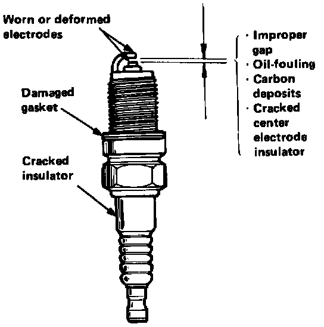
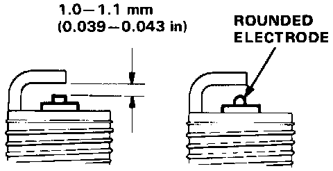

Spark Plug: Testing and Inspection
Spark Plug Inspection
1. Inspect the electrodes and ceramic insulator for:
- Improper gap
- Oil-fouling
- Carbon deposits
- Cracked center electrode insulator
- Worn or deformed electrodes
- Damaged gasket
- Cracked insulator
Burned or worn electrodes may be caused by:
- Lean fuel mixture
- Advanced ignition timing
- Loose spark plug
- Plug heat range too high
- Insufficient cooling
Fouled plug may be caused by:
- Rich fuel mixture
- Retarded ignition timing
- Oil in combustion chamber
- Incorrect spark plug gap
- Plug heat range too low
- Excessive idling/low speed running
- Clogged air cleaner element
- Deteriorated ignition coil or ignition wires

2. Replace the plug if the center electrode is rounded as shown.
Spark Plug (for all normal driving):
BCPR6E-11 (NGK), Q20PR-U11 (ND)
BCPR6EY-N11 (NGK)
For hot climates or continuous high speed driving:
BCPR7E-11 (NGK), Q22PR-U11 (ND)
BCPR7EY-N11 (NGK)
For cold climates:
BCPR5E-11 (NGK), Q16PR-U11 (ND)
BCPR5EV-N11 (NGK)
3. Adjust the gap with a suitable gapping tool.
Electrode Gap: 1.0 - 1.1 mm (0.039 - 0.043 in)
4. Screw the plugs into the cylinder head finger tight, then torque them to 22 N.m (2.2 kg-m, 16 lb-ft).
NOTE: Apply a small quantity of anti-seize compound to the plug threads before installing.